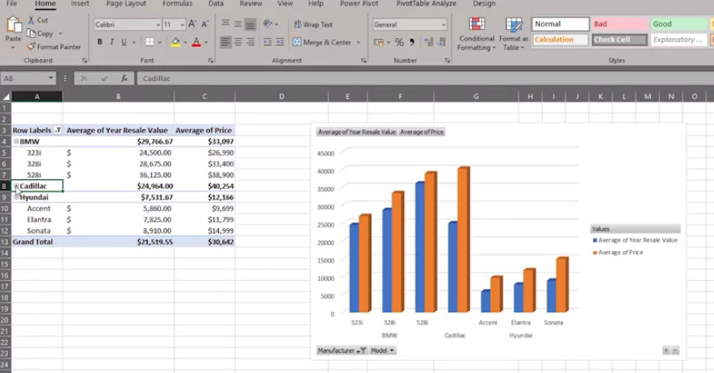
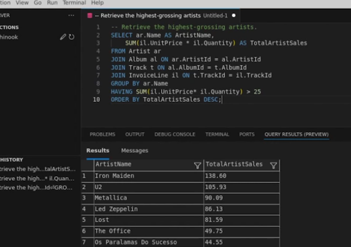
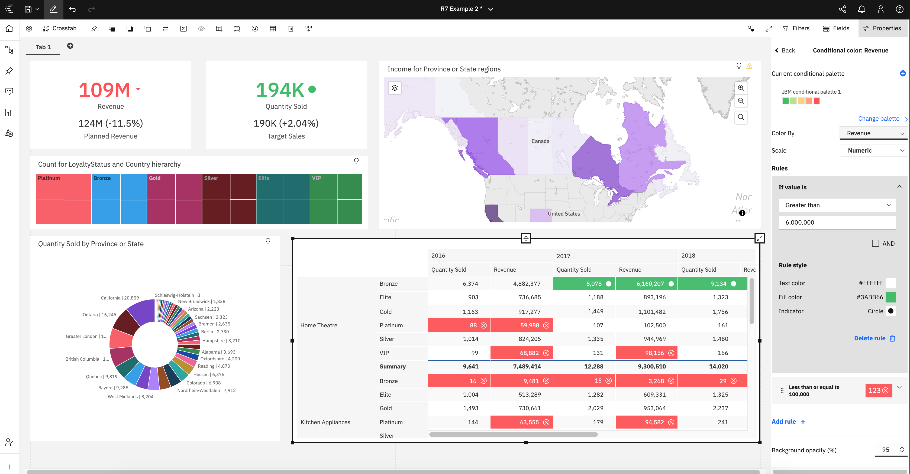

Microsoft Excel
Fluent
PivotTables, charts and advanced functions, reinforced through IBM's data analysis training.
Graduate Business and Management from Royal Holloway, with coursework in
Business Data Analytics. Completed studies in data analysis through IBM and currently studying SQL through Microsoft.
A closer look at my Power BI, Cognos, and SQL projects.

PivotTables, charts and advanced functions, reinforced through IBM's data analysis training.

Writing queries and joins against relational databases, from Microsoft's SQL Foundations course.

Building interactive dashboards through practical exercises in IBM Cognos Analytics.

Cleaning and forecasting on Excel data sets as part of Business Data Analytics coursework.
Understanding financial statements and accounting standards, including the EU Fourth Directive.

Understanding AI for Data Analysis and fundamentals needed to support projects responsibly.
Completed a virtual internship programme with PwC, reviewing financial statements, conducting inventory stock count sampling, and calculating Net Realisable Value (NRV) to validate inventory balances.
Developed strong communication and problem-solving skills as a Supermarket Assistant at Waitrose, adapting recommendations to individual customer needs.
Built strong customer service skills as a food server at Jaggers.
Managed ride operations and safety checks at Diggerland.